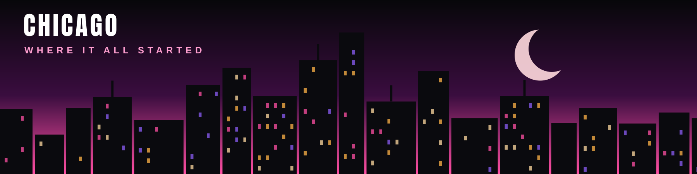

History
The Story of Ye
From making beats in his bedroom in Chicago to becoming one of the most successful and most debated artists in music, this is the story of Kanye West.
Growing Up in Chicago
Kanye Omari West was born on June 8, 1977, in Atlanta, Georgia. His mother, Donda West, was an English professor. His father, Ray West, was a former Black Panther and an award-winning photojournalist. His parents split up when he was 3, and he moved with his mom to Chicago, the city he would always rep.
As a teenager he started making beats and got mentored by Chicago producer No I.D. He went to art school on a scholarship and then Chicago State University, where his mom taught. At 20 he dropped out to go all in on music. His mom wasn't happy about it at first, but that choice later inspired the name of his first album.


From Beatmaker to Roc-A-Fella
Kanye spent the mid-1990s making beats for local Chicago artists, and in 1998 he worked on Jermaine Dupri's album Life in 1472. He then moved to the New York area and became an in-house producer for Jay-Z's label, Roc-A-Fella Records. His work on Jay-Z's 2001 album The Blueprint, including "Izzo (H.O.V.A.)" and "Takeover," made him one of the most in-demand producers in hip-hop. He also made hits for artists like Alicia Keys and Ludacris.
What he really wanted was to rap, but the label didn't see it at first. He didn't fit the tough, street image most rappers had back then, and he was known for wearing pink polos and Gucci loafers.
Through the Wire
In October 2002, Kanye was in a near-fatal car crash that broke his jaw. While he was still in the hospital, he asked for a drum machine. Then, with his jaw wired shut, he recorded "Through the Wire" about the crash. Nobody at the label believed in the song, so he paid for the music video himself. It became his breakout hit and proved he could make it as a rapper.
The School Trilogy (2004–2007)
His debut album, The College Dropout (2004), was a huge hit and won him his first Grammys. It was full of soulful samples and songs like "Jesus Walks" and "All Falls Down." Late Registration (2005) went bigger with live strings and the No. 1 hit "Gold Digger." Then came Graduation (2007), with artwork by Takashi Murakami and hits like "Stronger" and "Good Life." Its release-day sales battle with 50 Cent's Curtis is often called the moment hip-hop moved away from gangsta rap. Kanye won that battle.
Heartbreak and Reinvention (2008–2016)
In November 2007, his mother, Donda West, died. Kanye poured that pain into 808s & Heartbreak (2008), a sad, minimal album sung almost completely through Auto-Tune. It changed what rap albums could sound like and influenced a whole generation of artists.
Next came My Beautiful Dark Twisted Fantasy (2010), which many critics call his masterpiece. He followed it with Watch the Throne (2011), a joint album with Jay-Z, then the harsh, electronic Yeezus (2013) and the gospel-influenced The Life of Pablo (2016).
Beyond Music
Kanye also became a major name in fashion. His Yeezy sneakers and clothing, made with Adidas starting in 2015, became some of the most wanted streetwear in the world. He ran for president in 2020, and in 2021 he legally changed his name to Ye.
Controversy
His career has also been full of controversy, and his public behavior has often gotten more attention than his music. In 2022, his antisemitic comments led Adidas and other companies to end their partnerships with him, and he faced more backlash for antisemitic statements and lyrics in 2025. Before releasing Bully in 2026, he publicly apologized to Jewish people for his past comments.
Recent Years (2018–Now)
In 2018 he released ye and Kids See Ghosts, a joint album with Kid Cudi. His Christian faith shaped Jesus Is King (2019), followed by Donda (2021), named after his mother, and Donda 2 (2022). In 2024 he teamed up with Ty Dolla $ign as ¥$ for Vultures 1 and Vultures 2. "Carnival" from Vultures 1 hit No. 1 on the Billboard Hot 100. That made him the first rapper to top the chart in three different decades.
In March 2026 he released his 12th studio album, Bully, which debuted at No. 2 on the Billboard 200. That May, his 2008 song "Heartless" became his first to pass 2 billion streams on Spotify.
Timeline
- 1977
Born June 8 in Atlanta, then raised in Chicago by his mother, Donda. - 1990s
Makes beats for Chicago artists after dropping out of college at 20. - 2001
Produces key tracks on Jay-Z's The Blueprint. - 2002
Survives a car crash and records "Through the Wire" with his jaw wired shut. - 2004
Releases The College Dropout. - 2005
Releases Late Registration, and "Gold Digger" hits No. 1. - 2007
Releases Graduation. His mother passes away in November. - 2008
Releases 808s & Heartbreak. - 2010
Releases My Beautiful Dark Twisted Fantasy. - 2013–2016
Releases Yeezus and The Life of Pablo, and launches Yeezy with Adidas. - 2018–2022
Releases ye, Jesus Is King, Donda and Donda 2, and changes his name to Ye. - 2024
"Carnival" hits No. 1, making him the first rapper to top the Hot 100 in three decades. - 2026
Releases Bully, his 12th studio album.
Studio Albums
| Year | Album | Known for |
|---|---|---|
| 2004 | The College Dropout | "Through the Wire," "Jesus Walks" |
| 2005 | Late Registration | "Gold Digger," "Touch the Sky" |
| 2007 | Graduation | "Stronger," "Flashing Lights," "I Wonder" |
| 2008 | 808s & Heartbreak | "Heartless," "Love Lockdown" |
| 2010 | My Beautiful Dark Twisted Fantasy | "Runaway," "Power" |
| 2013 | Yeezus | "Black Skinhead," "Bound 2" |
| 2016 | The Life of Pablo | "Ultralight Beam," "Father Stretch My Hands" |
| 2018 | ye | "Ghost Town" |
| 2019 | Jesus Is King | "Follow God" |
| 2021 | Donda | "Hurricane," "Off the Grid" |
| 2022 | Donda 2 | Released only on his Stem Player |
| 2026 | Bully | Debuted at No. 2 on the Billboard 200 |
He also made the joint albums Watch the Throne (with Jay-Z, 2011), Kids See Ghosts (with Kid Cudi, 2018), and Vultures 1 and Vultures 2 (with Ty Dolla $ign, 2024).
← Back to Home